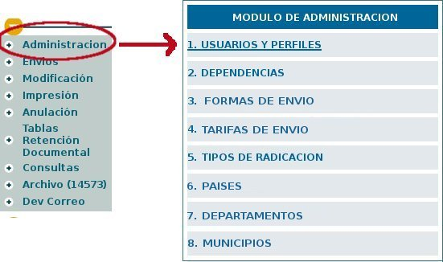
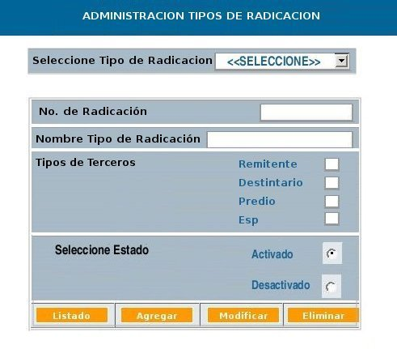

CU-ORFEO-59
- Administración Tipos de Radicación
Historia de revisión
FECHA
|
VERSION
|
DESCRIPCION
|
AUTOR
|
Abril
21 de 2006
|
1.0
|
Requerimientos
iniciales para la implementación del módulo de
Administración y la parametrización de los tipos de
radicación
|
Martha
Mera |
1.
Descripción
Permite realizar
la creación y parametrización de un tipo de
radicación para ser usada en el sistema.
2. Actores
2.1
Usuario normal
Usuario
administrador del sistema
3. Flujo de Eventos
3.1.
Flujo Básico ó Normal : Crear Forma de Envio
3.1.1
Precondiciones
3.1.1.1.
El actor debe haber ingresado al sistema
3.1.1.2. El usuario tiene permiso de administrador del sistema
1. A:
INICIO -
Selecciona el link "Administracion" en la lista de permisos
especiales

2. S: Ingresa al menú principal del módulo de
Administración.
3. A: Selecciona la opción "5. TIPOS DE RADICACION"
4. S: Despliega la siguiente ventana con la siguiente forma:

4.1 En la parte superior una caja de selección rotulada
"Seleccione Tipo de radicación", aqui aparece la lista de los
códigos de tipo de radicación que se encuentran
actualmente en el sistema.
4.2 Caja de texto rotulada "No. de Radicación" (Campo
numérico validando desde el 1 al 9)
4.3 Caja de texto rotulada "Nombre Tipo de radicación" (Campo
Alfanumérico)
4.4 Selección rotulado "Tipo de Terceros", con lista de check
box que se encuentran disponibles para mostrar las pestañas que
se diligenciarán para el tipo de selección.
4.5 Selección con radio boton rotulado "Seleccione estado" con
las opciones de "Activado" y "Desactivado", se encuentra seleccionado
"Activado"
4.6 Un botón rotulado "Listado"
4.7 Un botón "Agregar"
4.8 Un botón "Modificar"
4.9 Un botón "Eliminar"
5. A: Diligencia los datos en los campos solicitados, selecciona el
botón "Agregar"
6. S: Solicita la confirmación de creación. Despliga un
botón "Cancelar" y un botón "Aceptar"
7. A: Selecciona el botón "Aceptar"
8. S:Confirma la creación del nuevo tipo de Radicación.
Este ya aparece en la lista de "Seleccione Tipo de Radicación" -
FIN
3.1.2
Postcondiciones
3.2.1.1.
El Sistema debe actualizar las tablas requeridas que permitan hacer las
parametrizaciones de otras funcionalidades desde el módulo de
administración.
3.2.
Flujo Básico ó Normal: Modificar Tipo de Radicación
3.2.1
Precondiciones
3.2.1.1.
El actor debe haber ingresado al sistema
3.2.1.2. El usuario tiene permiso de administrador del sistema
3.2.1.3. El usuario ha seleccionado el link "Administracion" en
la lista de permisos especiales
3.2.1.4. El usuario ha seleccionado el link "Tipos de
Radicación"
3.2.1.5 Ya existen creadas en el sistema "Tipos de Radicación"
1. INICIO:
A: Selecciona el código que desea modificar desplegando la lista
que aparece rotulada como "Seleccione Tipo de Radicación"
2. S: Despliega la información correspondiente a este tipo de
radicación visualizándolo en el campo de Número de
radicación, Nombre Tipo de Radicación, Tipo de Terceros,
Estado.El campo de "No. de radicación" se encuentra
deshabilitado y no
se puede cambiar.
3. A: Realiza los cambios que desea. Da click en el
botón
"Modificar"
4. S: Realiza el cambio en las bases de datos respectivas actualizando
la información. Envia la confirmación del cambio de
datos: "Tipo de Radicación modificado satisfactoriamente"
- FIN
3.3.
Flujo Básico ó Normal: Eliminar Tipo de Radicación
3.3.1.1.
El actor debe haber ingresado al sistema
3.3.1.2. El usuario tiene permiso de administrador del sistema
3.3.1.3. El usuario ha seleccionado el link "Administracion" en
la lista de permisos especiales
3.3.1.4. El usuario ha seleccionado el link "Tipos de
Radicación"
3.3.1.5 Ya existen creadas en el sistema "Tipos de Radicación"
1.
INICIO:
A: Selecciona el tipo de Radicación que desea eliminar
2. S: Despliega la información correspondiente a este tipo de
radicación visualizándolo en el campo de Número de
radicación, Nombre Tipo de
Radicación, Tipo de Terceros, Estado.El campo de "No. de
radicación" se
encuentra deshabilitado y no
se puede cambiar.
3. A: Da click en el botón "Eliminar"
4. S: Verifica que en el sistema no se ha realizado ningún tipo
de radicación teniendo en cuenta el "Tipo de Radicación"
escogida para eliminar.
Realiza el cambio en las bases de datos respectivas actualizando la
información
Envia la confirmación de la eliminación de datos: "Tipo
de Radicación eliminado satisfactoriamente".
- FIN
3.4.
Flujo Básico ó Normal: Ver listado Tipos de
Radicación
3.4.1.1.
El actor debe haber ingresado al sistema
3.4.1.2. El
usuario tiene permiso de administrador del sistema
3.4.1.3. El
usuario ha seleccionado el link "Administracion" en
la lista de permisos especiales
3.4.1.4. El
usuario ha seleccionado el link "Tipos de Radicación"
3.4.1.5 Ya
existen creadas en el sistema "Tipos de Radicación"
1. INICIO: A: Selecciona el
botón "Listado"
2. S: Despliega
la información correspondiente a los tipos de Radicación
que existen
creadas en el sistema.
-
FIN
3.2.
Flujo Alterno :
Volver al indice